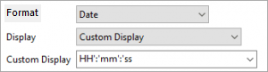
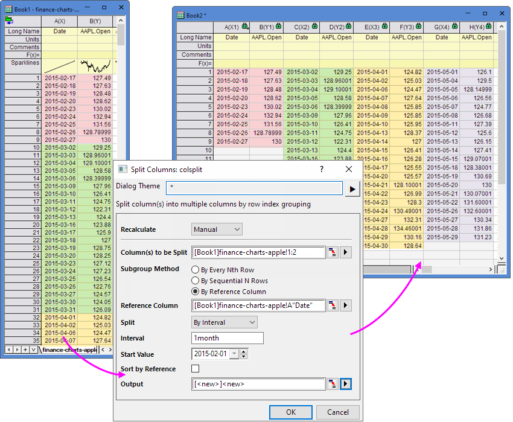

Datums- und Zeitangaben in Origin
DateTime-in-Origin
Origin interpretiert Datumswerte auf Grundlage des gregorianischen Kalenders. Zeitangaben werden als Stunden:Minuten:Sekunden interpretiert. Origin deckt damit den folgenden Datumsbereich ab:
- Bei der Eingabe vierstelliger Jahreszahlen unterstützt Origin den Bereich von:
- 1/1/0100 bis 31/12/9999.
- Bei der Eingabe zweistelliger Jahreszahlen erkennt Origin folgende Bereiche:
- 0 bis 44 = 2000 bis 2044
- 45 bis 99 = 1945 bis 1999
Origins mathematisches System für Datum und Zeit
Origins mathematisches System für Datum und Zeit basiert auf den astronomischen Julianischen Tageszahlen, die 1. Januar, -4712 (1. Januar, 4713 v. u. Z.), 12 Stunden Greenwich-Zeit als Null definieren. Origins System unterscheidet sich allerdings dadurch, dass es um 12 Stunden verschoben ist (siehe nächsten Abschnitt).
Origins Standardsystem: Angepasstes Julianisches Datum
Origins Standardsystem für Datum und Zeit legt t0 als 1. Januar 4713 v. u. Z. fest (1. Januar 4713, 24:00:00, v. u. Z. oder 2. Januar 4713, 00:00:00, v. u. Z.) -- 12 Stunden später als der Julianische Standardwert t0.
In diesem System interpretiert Origin ein Kalenderdatum+Zeit von ...
- 11. Juni 1998 um 21:23:01
... als einen Datumswert von ...
- 2450975,890984.
Um einen wahren astronomischen Julianischen Datumswert zu erhalten, müssen Sie 0,5 zu Origins Wert hinzufügen (0,5 Tage = 12 Stunden). Dies ergibt einen Wert von 2450976,390984.
Annahmen zu Zeitzonen oder zu jeder Art von Zeitverschiebungen (wie Sommerzeiten) werden nicht berücksichtigt.
Alternative Datum-Zeit-Systeme in Origin
Seit Origin 2019 bietet Origin zwei alternative Datums-/Zeitsysteme - ein wahres Julianisches Datumssystem und ein "2018"-System, bei dem t0 als 1. Januar 2018 um 00:00 definiert wird, was einen genaueren Umgang mit Bruchteilen von Sekunden ermöglicht.
Um eines dieser alternativen Systeme zu verwenden, müssen Sie den Wert der Systemvariable @DSP ändern: Außerdem wird dieser Wert im Projekt gespeichert. Daher müssen Sie einen Wert für jedes Projekt festlegen, in dem Sie ein alternatives Datums-/Zeitsystem verwenden möchten.
| Wert von @DSP |
Kalenderdatum |
Interne Zahl |
Kommentare |
| 0 |
2018-07-26 13:35:00 |
2458325 |
.56597222 |
Origins Standard (Wahres Julianisches Datum – 0,5) |
| 1 |
2018-07-26 13:35:00 |
2458326 |
.06597222 |
Wahres Julianisches Datum |
| 2018 |
2018-07-26 13:35:00 |
206 |
.565972222222 |
t0 = 1. Jan. 2018 00:00 |
 | Origins "2018"-System lässt eine größere numerische Präzision zu, wenn Messungen an Bruchteilen von Sekunden gemacht werden. Beim Arbeiten mit aktuellen Daten, können Berechnungen, die Messungen von bis zu 10-8 Sekunden berücksichtigen, unterstützt werden. |
Um ein alternatives Standardsystem für Datum und Zeit für Ihre Origin-Software zu wählen:
- Führen Sie Origin aus und wählen Sie im Hauptmenü Fenster: Skriptfenster (Shift+Alt+3).
- Geben Sie im Skriptfenster Folgendes ein (wählen Sie einen Wert aus der obenstehenden Tabelle) und drücken Sie Enter.
@DSP=Wert
| @DSP unterstützt drei Optionen
- 0 = Origins langjähriges angepasstes Julianisches Tagessystem mit der "Null" um Mitternacht am 1. Januar 4713 v. u. Z. (12 Stunden später als der wahre Julianische Tag).
- 1 = Wahrer Julianischer Tag ("Null" ist 1. Januar 4713, v. u. Z. um 12:00 mitteleuropäischer Zeit).
- 2018 = 2018-Datumssystem, bei dem "Null" der 1. Januar 2018 00:00 ist.
Hinweis: Wenn @DSP auf 1 gesetzt ist und Sie Datumsdaten als Zeit anzeigen möchten, empfehlen wir, die Spalteneigenschaften wie unten gezeigt, festzulegen. Ansonsten entsteht eine Verschiebung von 12 Stunden.- 
|
|
Zeitstempel und Julianisches Datum umwandeln
Abhängig von Ihrer Version von Origin gibt es einige Methoden, um einen Unix-Zeitstempel in ein Julianisches Datum und vice versa umzuwandeln:
Datums-/Zeitintervalle in Analysehilfmitteln festlegen
In einigen Hilfsmittel der Statistik und Restrukturierung unterstützt Origin das Festlegen von Datums-/Zeitintervallen für die Datenverarbeitung. Sie können Sekunde, Minute, Stunde, Tag, Woche, Monat oder Jahr als Datums-/Zeitintervall festlegen, wenn die Datenquelle Datum und Zeit ist.
| Hilfsmittel der Restrukturierung |
Hilfsmittel der Statistik |
|
|
|
 |
Hier wird das Hilfsmittel Spalten aufteilen als Beispiel verwendet. Basierend auf dem Datum sollen die Spalten in Februar, März, April etc. aufgeteilt werden.
- Markieren Sie die aufgeteilten Spalten und öffnen Sie den Dialog Spalte aufteilen über das Menü Restrukturieren: Spalten aufteilen.
- Setzen Sie die Methode der Teilgruppe auf Nach Referenzspalte(n) und legen Sie die Datumsspalte als Referenzspalte fest.
- Setzen Sie Aufteilen auf Nach Intervall und legen Sie das Intervall auf 1 Monat fest.
- Geben Sie den ersten Tag des Monats 2015-02-01 als Anfangswert an.
- Klicken Sie auf OK. Die Spalten werden dann nach 1 Monat aufgeteilt.
- 
|
Referenzen